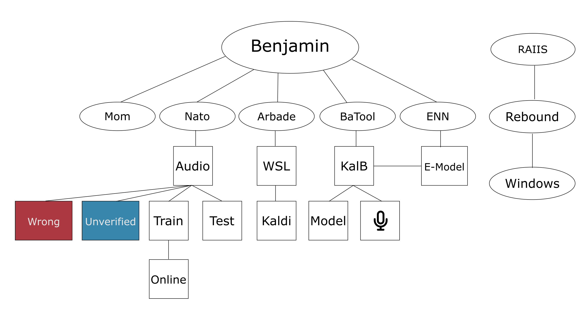

Benjamin Wiki
Benjamin project consist of different tools that you can find a short description and their relationship with each other down below.

Applications
- ArBade → An Environment to record and manage your own voice dataset and later train a model out of it.
- Mom → An Application like PolyBar to manage different workspace, show system status and showing
BaTooldetection output. - Batool → Engine that use Kaldi model to do online automatic speech recognition with focus on zero delay and maximum accuracy.
- ENN → A Neural Network Engine that trains a redundant model to detect out of vocabulary (OOV) word to overcome conventional FST model limitations.
- Rebound → An Application that sits between
BaTooland operating system and act as a virtual input that simulates key strokes and complex command execution based on the focused process. - Chess → Chess devides the screen into small cells that user can choose to select a mouse operation.